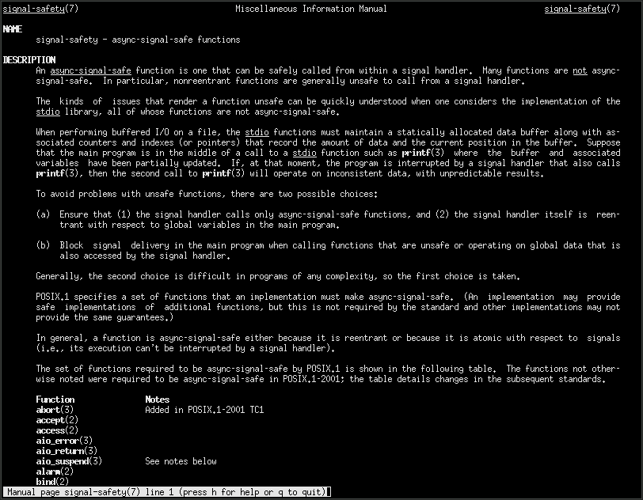
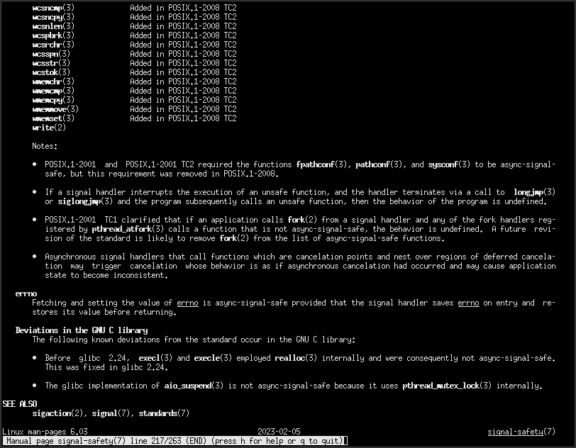

A descent into madness. A death by a thousand cuts.
Call me melodramatic, but all I want is a nice, pretty, formatted backtrace from a signal handler.
What am I to do?
Here's an example.
#include <stdio.h>
#include <signal.h>
void handle_sigint(int sig) {
printf("Received SIGINT\n");
}
int main() {
signal(SIGINT, handle_sigint);
while (1); // Loop forever
return 0;
}If you compile and run this, you'll see "Recieved SIGINT" whenever it
receives one, which you can do by pressing ctrl + c in your
terminal. You can send it SIGQUIT to exit by pressing
ctrl + \.
It might surprise you to learn that the example given above is not signal-safe. Why, and what does that mean?
First, open your terminal, and type man signal-safety.
Read it. Read it all. It could, metaphorically speaking, save your life.
Or a few hours debugging.

And also the notes at the end.

While this man page does lay out a lot of crucial information, it leaves a lot to be desired. What's actually more important than what's written there is what isn't. It also explains what you aren't allowed to do, but doesn't explain why. Let's explain why.
The man page says:
If, at that moment, the program is interrupted by a signal handler
that also calls printf(3), then the second call to printf(3) will
operate on inconsistent data, with unpredictable results.Why is this? I thought that printf() was threadsafe?
Well... it is. The problem is, signal handlers are not executed on a different thread. They're actually executed on the same thread. On linux, always the main thread, unless you cleverly configure signal masks. This means that mutexes are useless at preventing race conditions from signal handlers. In fact, note that the man page does not contain any mention of mutexes at all. Even attempting to acquire a mutex is unsafe, and prone to deadlocks.
Other functions are prone to these issues as well.
malloc(), for example, is ALSO not listed as AS-Safe in
man signal-safety, for the same reasons as
printf(). It's inherently required to operate on global
data, the bookkeeping for which could be overwritten at any time. Losing
malloc() rules out most other libraries. It also creates
some very unintuitive results, such as The Craziest Bug I
have Ever Witnessed, which is a real world example of this where I
found a bug in the julia runtime implementation of its own backtrace
signal handler.

Now that we understand signal safety, let's think about what we need to do to implement backtraces.
First, we need a library capable of tracing the stack. You could write this yourself. However, it would require extensive knowledge of the specific platform, and would not be portable. So, if you haven't also written your own platform, you should probably use a library.
In practice, on ARM/x86/RISC-V/Whatever, you have a choice. You can
either use glibc (which is no doubt already installed unless you're
using an all-musl distribution) or libunwind. Since it's
already installed, let's use glibc. To view the docs for the glibc
backtrace library, consult the manual once again and type
man backtrace in your terminal.
The glibc functions are backtrace(),
backtrace_symbols(), backtrace_symbols_fd().
backtrace_symbols() returns a malloc()ed
array, so it's out of the picture immediately. The rest of the functions
are not documented as AS-Safe. But, I went on IRC and asked the glibc
maintainers about it, and they said it was safe.

So, we need to write to a file descriptor. Sure, I thought. How bad could it be? What ensued was agony beyond reason, horror beyond imagination. Or something, I don't know. I think that I found a small hole in the POSIX standard.
We need to create a file descriptor to write into. How will we do that?
Ideally, the bits and bytes backing the file descriptor should remain
in memory. So, we should call memfd_create(). So, we look
it up in man signal-safety, and... It isn't there. It's not
required by POSIX to be AS-Safe.
The glibc implementation of memfd_create() is probably
AS-Safe. Probably. I could go ask the maintainers again. But, I haven't.
There's another issue. It's linux-only. So, let's use
mkstemp(). But... that isn't marked as AS-Safe either.
-- REST OF DRAFT BEYOND THIS POINT --
backtrace(),
backtrace_symbols(), and
backtrace_symbols_fd().
backtrace_symbols() returns a malloc()ed
array, so it's out of the picture.memfd_create()? Nope. Not signal-safe.mkstemp()? Nope. Not signal-safe either.memfd_create() after all.addr2line.pipe(), dup2(),
fork(), exec() song and dance.
addr2line.addr2line.addr2line gives us
unresolved file paths with a bunch of dots in them. We should probably
resolve them first.
printf() and write to stdout.
printf() is unsafe.
fdopen() it, then
fprintf() to that. Why not?
fprintf() isn't standardized to be
AS-Safe when it has exclusive access to the backing FILE*
structure, so this is nonstandard and may just break on some machines.
It probably does break at least on some.write() to the file
descriptor you wish to write to.
write()s, they might get
interleaved with writes on other threads.FILE* structure, because fileno() is
apparently unsafe as well, unsure as to why. It would be nice to be able
to write to any FILE*, but sadly that is not possible.fflush()
(you can't, it's unsafe), it would be impossible to garuntee that
another thread won't just immediately buffer more. This cannot be
circumvented, because mutexes are not signal safe. So there's the
possibility that the backtrace you write() gets mixed in
with other stuff. But that's probably acceptable, which is good because
we need to accept it.malloc()
and is unsafe.
dlopen()ing it or by
inserting a dummy call to make sure the malloc() isn't
incurred inside the signal handler.errno should be saved at the
beginning, and restored at the end. Other threads are not a concern
here, but it could otherwise overwite the error value for the current
thread at any time, which would be very unfortunate. It would seem as
though a syscall failed when it hadn't, or vice-versa.I hope that you find this useful. May you never feel my pain.